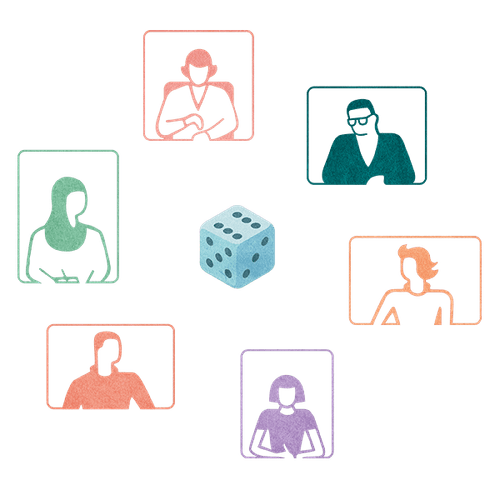

Many of Lufthansa Technik’s 4,500 employees were stuck in endless meetings. With 9 Spaces, they began building a more effective meeting culture.
Explore six non-awkward formats, methodsand exercises that help bring teams closer together.

A tool that helps team members move past small talk and learn about one another by answering playful questions.
Less talking and more listening: a walking exercise to practise the four types of listening.
The better we know a person, the easier it is to build a strong relationship with them. This tool helps you to do this.
A tool that helps you connect with your team through embracing and practicing vulnerability.